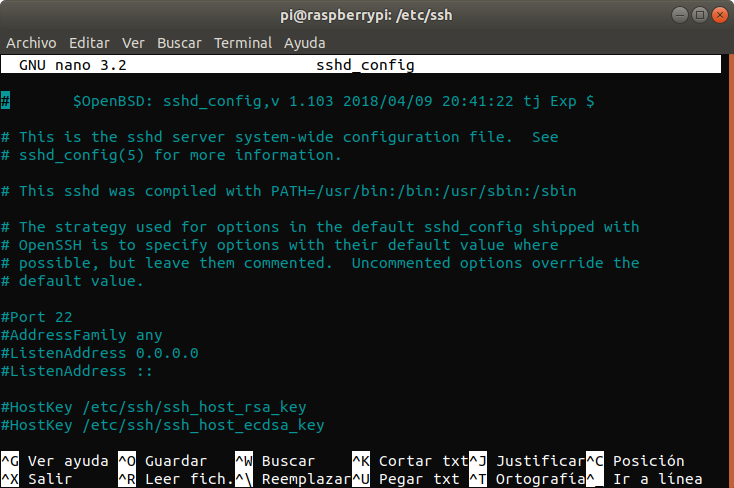
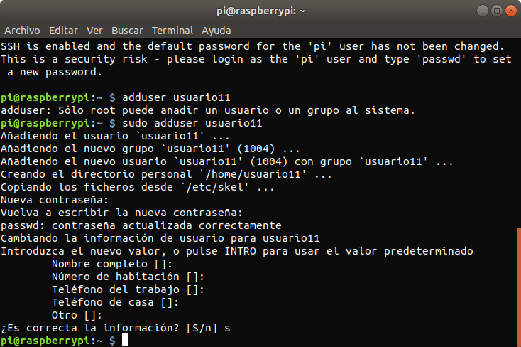
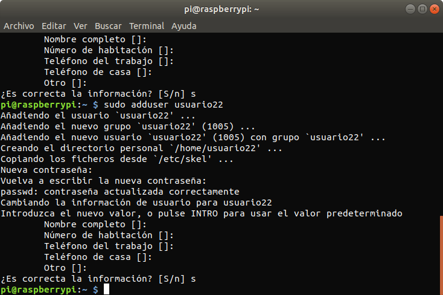
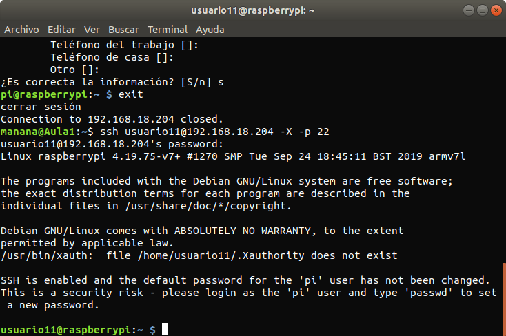
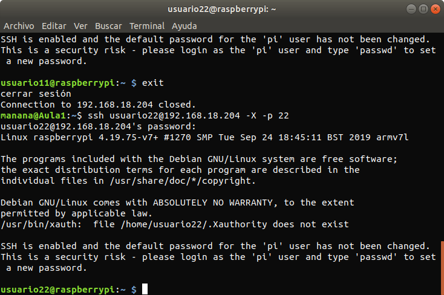
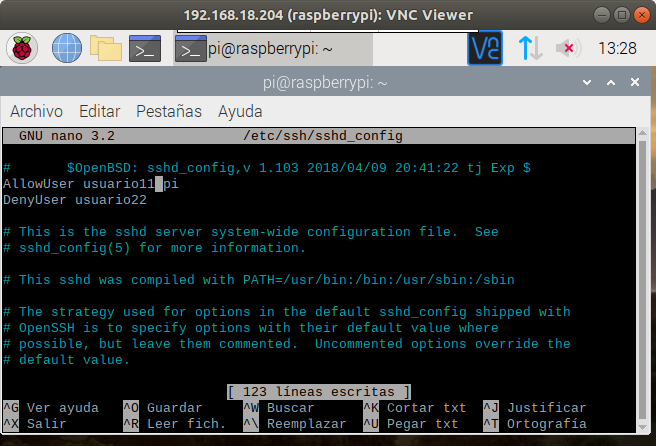
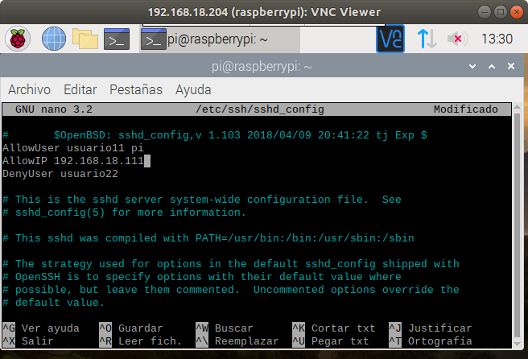
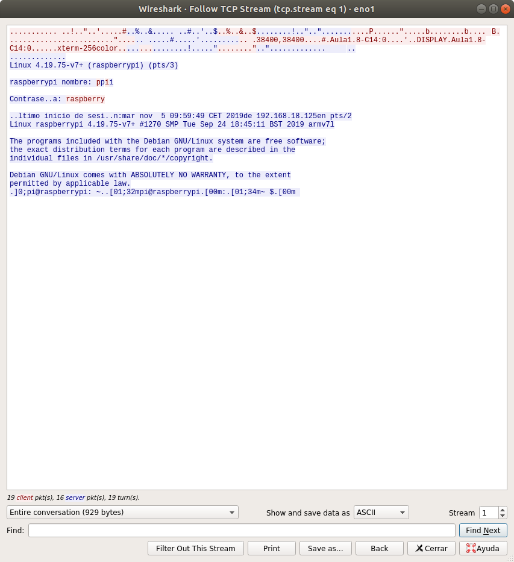

Comprobamos que esta el puerto 22 en escucha.
Creamos 2 usuarios.
 Comprobamos que podemos acceder mediante ssh a los usuarios.
 Al final no cambie el puerto porque me daba problemas, asique tengo el mismo.
Cambiamos la configuración del servidor para que podamos acceder con el Usuario 1 y que no podamos acceder con el usuario 2.
Cambiamos la configuración del servidor para que podamos acceder desde una IP específica.
Con el wireshark capturamos una conexion ssh y comprobamos que el login y la contraseña están encriptados.
